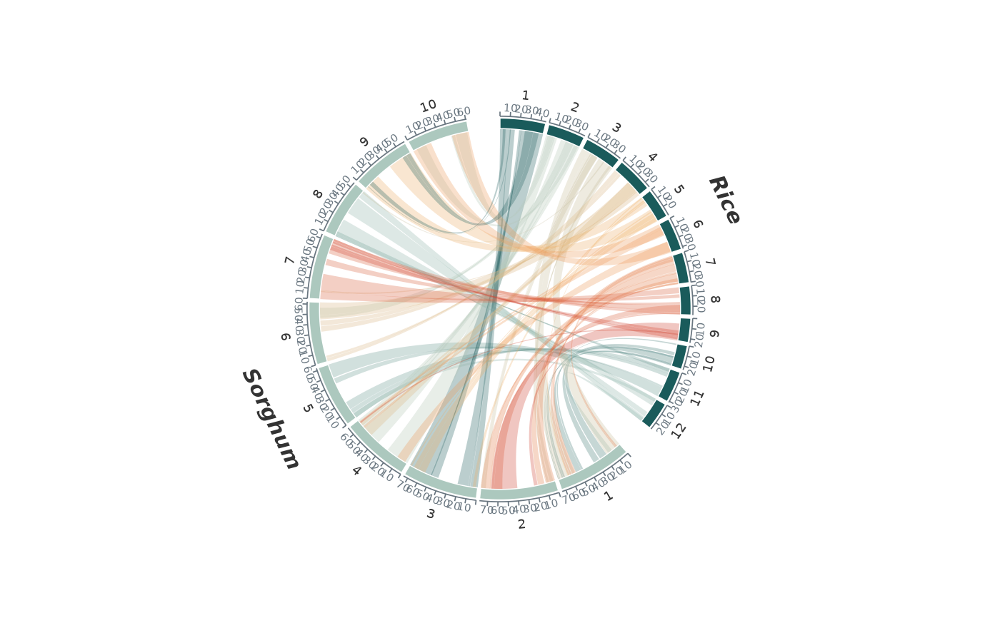

Draw tick marks and position labels along every displayed sequence. Add
with p + syn_axis(). The axis occupies a thin lane that stacks with the
other tracks: outside the chromosome band of a circular plot (or inside
with position = "inside"), or below each genome in a linear plot.
Usage
syn_axis(
by = NULL,
unit = NULL,
labels = TRUE,
label_start = FALSE,
label_size = 2.1,
colour = "#697680",
linewidth = 0.3,
line = TRUE,
height = 0.06,
gap = 0.01,
position = c("outside", "inside")
)Arguments
- by
Distance between ticks in plot coordinate units.
NULLpicks a round step giving about eight ticks on the longest sequence.- unit
Label unit, assuming plot coordinates in base pairs:
"kb","Mb"or"Gb"divide and append the unit;NULLprints the raw coordinate (use this when the plot already uses kilobases).- labels
Print tick labels? The label at each sequence start is omitted unless
label_start = TRUE.- label_start
Also label the tick at the start of each sequence?
- label_size
Label text size in mm.
- colour, linewidth
Tick, baseline and label colour; line width in mm.
- line
Draw a baseline along each sequence?
- height, gap
Lane thickness and preceding gap, as fractions of linear tier spacing or of the original circle radius.
- position
Circular placement,
"outside"or"inside".
Value
An object added to a ggplot with +, as for syn_track().
Examples
data(rice_sorghum)
plot_circular_synteny(rice_sorghum, c("Rice", "Sorghum"), chr_fill = "per_species") +
syn_axis(by = 10, unit = NULL)
